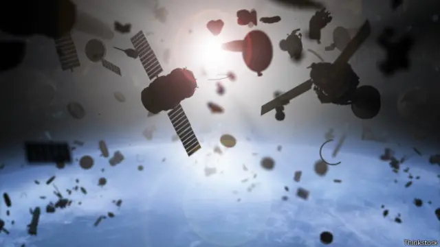

Direito Espacial: Entendendo as Regras do Espaço Exterior
Explore os principais desafios jurídicos e éticos do espaço — desde tratados internacionais e detritos orbitais até mineração de asteroides e governança global.
O que é Direito Espacial?
O Direito Espacial é o conjunto de regras que define como países e empresas podem explorar o espaço sem causar caos. Assim como temos leis na Terra, o direito espacial garante que tudo lá em cima seja pacífico, seguro e justo.
Como ele funciona?
Ele se baseia em tratados criados pela ONU, especialmente o Tratado do Espaço Exterior de 1967. Esses acordos definem o que pode e não pode ser feito no espaço, como lançar satélites, proteger astronautas e lidar com lixo espacial.
Por que é importante?
O direito espacial evita conflitos, protege astronautas, define responsabilidades e estimula cooperação internacional. Em resumo: garante que o espaço continue sendo um bem comum pra todos.
O que ele conquistou até hoje?
Desde os anos 60, ele tem evitado armas no espaço, garantido a segurança de astronautas, criado registros de satélites e inspirado novas discussões sobre mineração e turismo espacial.
Principais Tratados Espaciais
Clique para ver detalhes
Tratado do Espaço Exterior (1967)
O espaço deve ser usado para fins pacíficos. Ninguém pode “possuir” a Lua. Armas nucleares no espaço? Proibido! E cada país é responsável por tudo o que lança lá em cima.
Acordo de Resgate (1968)
Se um astronauta estiver em perigo, ele deve ser resgatado e devolvido com segurança. E objetos espaciais que caem em outro país precisam ser devolvidos também.
Convenção de Responsabilidade (1972)
Se um satélite causar danos, o país que o lançou é o responsável. Esse tratado cria as regras pra indenizações e segurança.
Convenção de Registro (1976)
Todo país deve registrar o que lança no espaço. Isso cria um catálogo oficial mantido pela ONU.
Acordo da Lua (1979)
A Lua e seus recursos pertencem à humanidade como um todo. Mas… quase ninguém assinou esse acordo.
Falhas do Direito Espacial
Apesar de tudo, ainda há muitos buracos nas regras espaciais — como a mineração de asteroides e o lixo orbital, que ainda não têm leis bem definidas.
Além disso, quando um país faz besteira (tipo destruir um satélite e gerar mil pedaços de lixo), quase nunca há punição real.

Curiosidades sobre o Direito Espacial
Clique para ver detalhes
Tratado do Espaço Exterior
Assinado em 1967, durante a Guerra Fria. Foi o primeiro grande acordo sobre o espaço.
Detritos Espaciais
Mais de 25.000 pedaços de lixo espacial estão sendo rastreados na órbita da Terra.
Sem Armas Nucleares
O Tratado do Espaço Exterior proíbe armas nucleares em órbita ou na Lua.
Linha do Tempo de Satélites e Detritos
Cada ano, mais satélites são lançados, e o lixo espacial cresce junto.
Os tratados antigos não dão conta de tudo, então o direito espacial precisa evoluir pra manter o espaço seguro.
Ano: 1960
Satélites: 0
Detritos: 0
O espaço é vasto, assim como a necessidade de compreendê-lo e protegê-lo. Obrigada por explorar comigo!